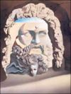

De: La Frikipedia, la enciclopedia extremadamente seria.
De: La Frikipedia, la enciclopedia extremadamente seria. De: La Frikipedia, la enciclopedia extremadamente seria.

Es Común para los que no saben acerca de mitología considerar a los Dioses de Grecia diferentes a los Dioses de Roma hay que ser tonto para hacerlo, pero la verdad es que no es así, resultan ser exactamente los mismos, los romanos fueron los copiones de mierda, que copiaron todo pero les cambiaron los nombres, aunque cabe aclarar que pueden haber diferencias entre un pueblo y otro con respecto a la forma de adorar a los Dioses, unos practicarán orgías los días de luna llena, otros practicarán orgías en los días con luna nueva; teniendo todos más o menos una misma constante, las orgías, que envidia a los antiguos griegos follaban en el templo!!!... mientras nosotros pasamos de estar hincados a sentados, abría que regresar a las viejas costumbres.
Los Dioses grecorromanos son famosos en el mundo por ser las deidades más mundanas de todas la mitologías, cometían errores, sufrían de celos, amaban… en fin podemos decir que eran más humanos que los mortales a los que regían (imagínense nada más que mal estaban), esta idea de los Dioses imperfectos es lo que los ha hecho trascender a lo largo de los siglos, y es por eso que son figuras universales que prevalecen en el tiempo (es por eso que hasta los soquetes como tu los menos letrados conocen de su existencia).
Los griegos son el primer pueblo que empieza a dar explicaciones a las cosas que pasan en el mundo, primero mediante la imaginación como fuente explicativa de la realidad (y unas cuantas sustancias alucinógenas), y después mediante la razón la filosofía explicaría el origen del mundo (pero siguieron usando sustancias alucinógenas), y que sería antecedente para las Ciencias Actuales Las cuales también usan hierbita verde para agarrar inspiración). Siendo la imaginación un método de razonamiento bastante tonto poco preciso, es que generan las explicaciones acerca del origen del universo, y al ser elementos relativos y libres de interpretación (obvio es que la cagaban), para algunas poblaciones y épocas los acontecimientos no son exactamente los mismos, pero para evitarnos problemas, vamos a abordar la Teogonía de Hesíodo (y porque esa fuente y no otra... porque es la única que me se), que es una obra que engloba las creencias acerca de los Dioses y las ordena para ofrecer sentido lógico (o tal vez no lo ofrezca, pero que demonios, es lo que hay.

Podría citar cientos de fuentes bibliográficas que abordan quien rayos es Hesíodo, pero la verdad de las cosas tengo flojera y esas fuentes, no son muy exactas pues se basan en suposiciones y elementos con pocos fundamentos, es por ello que si ellos medio inventaron la historia, ¿yo por qué no? Hesíodo era un chaval medio grifo (es decir que tomaba su inspiración de la naturaleza, las más de las veces fumándosela), que en un momento de esos que tu bien conoces cuando estas elevado y tocas las puertas del Nirvana, tuvo a mal bien la revelación del origen de los Dioses griegos, y se dispuso a escribir tal revelación en una obra llamada la Teogonía que significa origen y genealogía de los dioses, originalmente pensó en llamar a su obra Génesis, pero por cuestiones de derecho de autor que no vamos a abordar no se pudo.
Cuenta la historia (más bien el drogadicto Hesíodo), que en no existía nada, y como nada existía surgió el caos (conforme vayamos avanzando se darán cuenta de lo drogado que estaba cuando escribió esta historia), del cual más tarde surgió la Tierra (que los Griegos identifican como la Diosa Gea), Gea, por si sola, sin ayuda de nadie ( es una forma de reproducción sumamente aburrida conocida como asexual) tuvo a un hijo llamado Cielo (Urano como lo llamaban los copiones de mierda romanos), y en un acto de desesperación y para gusto del cuerpo, madre e hijo se unieron como esposos, y dieron a luz a los Titanes, entre ellos el Tiempo (Cronos), quien abusando de su fuerza, castro a su padre (que dolor), y le quito el reino de los dioses, para más tarde casarse con su hermana Rea, y así engendrar su propia descendencia, pero Urano antes de irse al destierro maldijo a su hijo de puta diciéndole que uno de sus hijos le quitaría el control del reino, Cronos para prevenir tal evento, se comía a sus propios hijos, hasta que un día harta de perder a sus vástagos, Rea dio a luz a Zeus, lo escondió en la isla de Creta y le dio a Cronos una roca envuelta en pañales diciéndole que era su último hijo(parece ser que los pañales ya estaba usados), cuando Zeus creció, cumplió la maldición de Urano, derrotando a su padre, haciendo que regresaran a sus hermanos (algunos autores dicen que Zeus le dio una pócima a su padre para que regresara a sus hermanos, pero la verdad es que Zeus le metió el dedo a su padre en la garganta para provocarle el vomito, años más tarde las inútiles adolescentes imitaron esta acción, sin saber muy bien del porque, generando la anorexia y quedando como perros galgos). De esta manera Zeus se quedo con el control del reino de los dioses, no sin antes librar una batalla con sus tíos los titanes, quienes reclamaron el derecho al trono, pero no pudieron hacer mucho, ya que los Cíclopes (tíos de Zeus y quienes no eran muy inteligentes) ayudaron a su sobrino para quedarse con el control de los Dioses.
Zeus posteriormente formo una corte en la cima de Monte Olimpo, donde reina desde entonces, sufriendo de vez en cuando algunos problemas pero nada más (como el herpes y la gonorrea que agarra cuando anda de infiel, o cuando su esposa le reclama que anda de infiel, o cuando sus amantes le reclaman que deje a su esposa, problemillas sin mucha importancia). No todos los dioses tienen acceso al Olimpo
| Imagen | Nombre Griego / Latino | Atributos | Castigo |
|---|---|---|---|
| Zeus / Jupiter | Rey de los Dioses, Dios de los fenómenos celestes. | Si no le rindes tributo, lo más seguro es que te caigan en la movida por infiel. | |
| Poseidon / |
Dios de los mares y los oceanos. | Si no le ofreces sacrificios antes de salir a navegar, te comera uno de sus hijos que son los monstruos marinos, preguntale a Homer J.Simpson. | |
| Ares / Marte/ |
Dios de las Guerras y los conflictos armados. | Rindele tributo solo si, y solo si estas en medio de una guerra y vives en Estados Unidos o Isrrael. | |
| Hefaistos / Vulcano | Dios del Bronce, la plata y el oro; Dios de las creaciones industriales. | Si eres defraudador inversionista de Wall Stret tienes que rendirle tributo a este dios o caeras en crisis económica. | |
| Hermes / Mercurio | Dios de la comunicación y el chisme, mensajero de los dioses. | Si no le rindes tributo se publicara un articulo tuyo en una de esas revistas del corazón como Hota o Tv notas calumniandote y diciendo que eres gay. | |
| Febo / Apolo | Dios de la luz,poeta y cantor por excelencia, medicina, indecisión y la bisexualidad | Ten cuidado rendirle tributo a este dios te puede hacer indesiso o bisexual como el. | |
| Hera / Juno | Diosa del matrimonio,de las viudas y por defecto automatico de las mujeres engañadas. | Si no le rindes tributo a esta diosa serás castigado con la infidelidad, si eres infiel rindele tributo a Zeus para equilibrar la maldición de la Diosa | |
| 100px | Afrodita / Venus | Diosa de la belleza y los placeres carnales. | si no le rindes tributo lo más seguro es que te salga un grano en la cara, y no consigas pareja en toda tu vida. |
| Deméter / Ceres | Diosa de la agricultura y de las labores de supervivencia humana. | Si no le rindes tributo a esta diosa te mueres de hambre. | |
| Artemisa / Diana | Diosa de la caza y la pesca. | Si vas de caza y no le rindes tributo a esta diosa es posible que te dispares en un pie (aunque también es posible que te pase por idiota). No hace falta decir que Froilán no le rezó nunca. | |
| Palas Atenea / Minerva | Diosa de la inteligencia, de la razón y de la guerra que buscaba la paz. | Si no le rindes tributo a esta diosa reprovaras cualquier examen que presentes. | |
| Hestia / Vesta. | Diosa del hogar. | No rendirle tributo a la diosa puede generar que pierdas tu casa o que la roben. |
| Imagen | Nombre Griego / Latino | Atributos | Castigo |
|---|---|---|---|
| Gea | Diosa de la Tierra (parece ser que es la tierra en sí). | Aunque le rindas tributo parece ser que esta diosa quiere matarte con un terremoto, huracán o cualquier otra catastrofe natural. | |
| Cielo / Urano | Dios de los Cielos. | Rezale a este dios para que no te caiga un avión en la cabeza. | |
| Titanes | Dioses sin mucho poder como Atlas, Oceanos entre otros. | No hay necesidad porque están presos en el Tartáro, o no son muy importantes. | |
| Cronos | Dios del Tiempo | Si no le ruegas a este dios cuando menos te des cuenta vas a ser igual de vejete que el. | |
| Rea | Diosa de los partos. | Si no le rindes tributo estarás condenado a tener cientos de hijos. | |
| Hades | Dios del inframundo y señor de los muertos | De la muerte no te vas a escapar ni rindiendole tributo a este Dios, asi que lo que puedes esperar es que te mande a un bonito lugar en los Campos Elíseos. | |
| Eros /Cupido | Dios del Amor (O el amor en sí) | Si no le rindes tributo a este dios pagarás con tener una novia bien gorda y fea. | |
| Proserpina / Perséfone | Diosa del inframundo. | Ruegale para que no vallas derechito a uno de los circulos de los infiernos. | |
| Dionisos / Baco | Dios del vino y la buena vida | Si no le rezas a a este dios, cada vez que tomes sufrías de resacas insoportables. | |
|  | Hado / El Destino | Dios que reguia el destino del universo, los mortales y de los mismos dioses. | Si no le rezas a a este dios, elegirá el peor de los destinos para ti, y las parcas cortarán el hilo de tu vida prematuramente. |
| |
|---|
|
Ἀφροδίτη · Ἀπόλλων · Ἄρεως · Αρτεμιςαρ · Ἀθηνᾶ · Χρόνος · Δημήτηρ · Διώνυσος · Γαῖα · ᾍδης · Ἥφαιστος · Ἧρα · Έρμῆς · Ἑστία · Ποσειδῶν · Προμηθέας · Περσεφόνη · Οὐρανός · Ζεύς |
Autor(es):